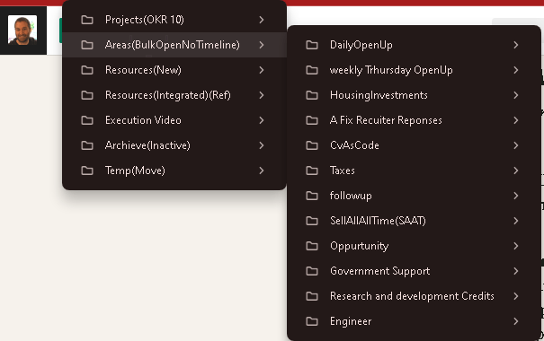

🚀 How I Use the PARA Method to Boost Productivity and Focus
Hey there! 👋 In this blog post, I want to share with you how I integrate the PARA method (Projects, Areas, Resources, and Archives) into my daily routine, especially when it comes to opening tabs in different areas of my work. I’m always on the lookout for ways to stay productive, and this method has been a game-changer for me.
Let’s dive into the details! 💡
🔗 What is the PARA Method?
The PARA method, developed by Tiago Forte, is a simple and powerful system for organizing all your tasks and projects. It stands for:
-
Projects: Things you’re actively working on.
-
Areas: Ongoing responsibilities that need to be maintained.
-
Resources: Reference materials or knowledge.
-
Archives: Inactive items for future reference.
This method allows you to structure your work and life in a way that makes sense, without feeling overwhelmed by a flood of information. It's a great approach to help manage digital clutter and focus on what truly matters.
🎯 My PARA-Based Workflow: Daily Tabs Open in Focused Areas
Each morning, I follow a routine to determine which areas to focus on for the day. Here’s my daily process:
-
📝 Projects First:
I open tabs that are directly related to ongoing projects. This might be a GitHub repository, a design doc, or a planning board like my Kanban. I keep these tabs minimal to prevent distractions, and I pause on each project screen to ensure I’m on track. (Pause for focus: ⏸️) -
📊 Area of Responsibility:
These are ongoing commitments that don’t necessarily have a due date but need regular attention, such as:

-
Monitoring Azure dashboards (for CRC and monitoring systems).
-
Working on client or personal finance management.
-
Regular upkeep on my video production schedule. I open tabs for these once my projects are set, ensuring I check in daily to see progress.
-
📚 Resource Gathering:
When I need to reference learning material or notes, I open tabs for documentation or research. This might include StackOverflow, Azure documentation, or creative resources for video production. Resources are kept open only as long as needed. -
🗂️ Archive for Review:
Every now and then, I review my archives to ensure nothing important is missing from my active workflow. This helps me declutter and stay efficient.
🚀 How I Decide on Tabs:
-
Priority to Projects: 🔥 My tabs revolve around active projects because that’s where most of my energy goes. I avoid opening unrelated tabs, using tools like Workona or OneTab to manage them.
-
Limit Distractions: 🚫 I aim for only 4-5 tabs per session, keeping everything clean and relevant.
-
Routine Review: 🔄 I revisit tabs at lunchtime and at the end of the day, closing ones I no longer need. This helps me wrap up loose ends and stay on task.
💡 Pro Tip: Use browser extensions to pause tabs you’re not using, so you save memory and reduce distraction. This little hack is perfect for keeping your focus while working on multiple things.
💼 Connect with Me:
If you're curious about how I make use of the PARA method for managing projects, or if you just want to connect, feel free to reach out on these platforms:
-
💼 LinkedIn: https://www.linkedin.com/in/rifaterdemsahin/
-
🐦 Twitter: https://x.com/rifaterdemsahin
-
🎥 YouTube: https://www.youtube.com/@RifatErdemSahin
-
💻 GitHub: https://github.com/rifaterdemsahin
🔥 What’s your method for managing digital clutter? Let’s chat about how you can stay productive!
Imported from rifaterdemsahin.com · 2025